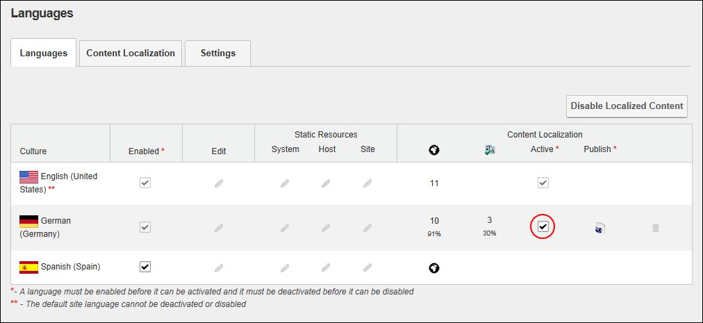
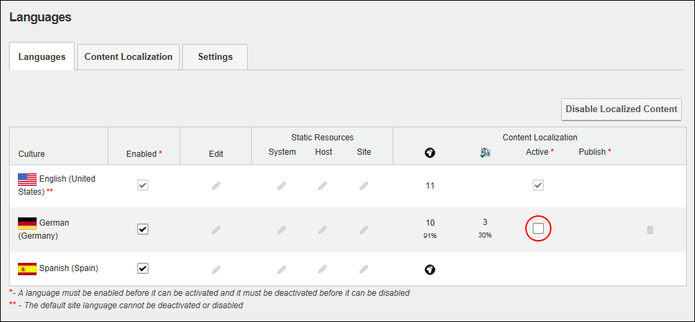

<?xml version="1.0" encoding="utf-8"?>
<html xmlns:MadCap="http://www.madcapsoftware.com/Schemas/MadCap.xsd" MadCap:lastBlockDepth="6" MadCap:lastHeight="1204" MadCap:lastWidth="788">

    <body>
        <h1>Activating/Deactiving a Language</h1>
        <p>How to activate or deactivate a language using the Languages module. Site visitors can view the site in any of the active languages as well as any translated content for that language. A language is typically activated once the relevant pages have been translated (<MadCap:xref href="../Translating/01 Translating a Page.html">See "Translating a Page"</MadCap:xref>). Note: The skin applied to the site (or any individual site pages) must include the Languages skin token to view flag icons. </p>
        <p>
            In DNN&#160;Platform, users (including unauthenticated users)&#160;must be granted Edit Module permissions or have been granted Non-Administrator permissions to the Languages tab. IN Evoq Content and Evoq Content Enterprise, users (including unauthenticated must be granted <MadCap:annotation MadCap:createDate="2013-06-03T11:23:33.3006233+10:00" MadCap:creator="Lorraine" MadCap:initials="LO" MadCap:comment="Is this correct? I only tested on Community Edition." MadCap:editor="Lorraine" MadCap:editDate="2013-06-03T11:23:45.7663363+10:00">Edit Content </MadCap:annotation>permissions or have been granted Non-Administrator permissions to the Languages tab. <MadCap:xref href="../Configuring Content Localization/Providing Access to the Languages module.htm">See "Providing Access to the Languages module"</MadCap:xref></p>
        <ol>
            <li value="1">Navigate to Admin &gt;&#160;Advanced Settings &gt;  <![CDATA[ ]]><b>Languages</b> - OR&#160;- Go to a Languages module.  This displays the list of available languages.</li>
            <li value="2">Select the <b>Languages</b> tab.</li>
            <li>In the <b>Content Localization - Active</b> column, select from these options:<ul><li><MadCap:snippetText src="../../../../../Resources/Snippets/Check.flsnp" />  beside a language to activate the language and allow users to select it on the site. This also enables the <b>Publish</b>&#160;&#160;button on the Language module that allows you to publish any new translations.</li></ul></li>
        </ol>
        <p>
            
        </p>
        <blockquote>
            <ul>
                <li>
                    <MadCap:snippetText src="../../../../../Resources/Snippets/Uncheck.flsnp" />to deactivate a language and hide it from site users. This also disables the <b>Publish</b>&#160;&#160;button preventing new translations from being to be published until the language is reactivated.</li>
            </ul>
        </blockquote>
        <p>
            
        </p>
    </body>
</html>